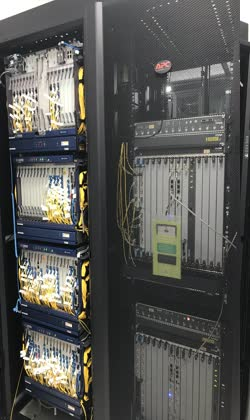

e-Beograd, 5. i 6. novembar 2020.


Univerzitet u Beogradu, a uz podršku Horizonti 2020 projekta OpenAIRE, organizuje Dane otvorene nauke (III). Cilj konferencije je upoznavanje istraživača iz Srbije sa principima otvorene nauke i aktuelnim inicijativama i zahtevima u ovoj oblasti, posebno u kontekstu projekata finansiranih od strane Fonda za nauku Republike Srbije i Evropske komisije. Kroz 4 dvosatne sesije učesnicima će biti prikazano sve što već radi (i može da se koristi) u Srbiji.
Dani otvorene nauke (III) će se održati preko Zoom-platforme 05-06. 11. 2020.
Sva izlaganja su na srpskom jeziku.
Pitanja i komentare možete postaviti na dokumentu.
Prenos je dostupan na Youtube kanalu (za one koji nisu u prvih 100).
Program konferencije
Četvrtak, 5. novembar 2020.
|
Mesto
|
|
|
|
Sesija 1 - Otvorenost - Politike i inicijative |
|
10.00 - 10.05 |
Uvodna reč |
|
10.05 - 10.35 |
Otvorena nauka u Srbiji - šta se promenilo i šta će se promeniti (Evropa, Srbija) |
|
10.35 - 11.05 |
UNESCO preporuke za otvorenu nauku |
|
11.05 - 11.35 |
Otvorene infrastrukture - inicijativa (RCC ) |
|
11.35 - 11.50 |
Uneskove Preporuke o nauci i naučnim istraživačima u kontekstu projekta RRING |
|
Sesija 2 - Alati za otvorenu nauku |
|
|
13.00 - 13.15 |
Servisi za podatke o APC i OpenAPC (ProRef ) |
|
13.15 - 13.30 |
Otvorenost Srpskog citatnog indeksa (SCIndeks ) |
|
13.30 - 13.45 |
Repozitorijum Univerziteta u Kragujevcu (SciDar) |
|
13.45 - 14.00 |
TRAP/RCUB - mreža repozitorijuma |
|
14.00 - 14.15 |
Potencijali volonterske nauke (eng. Citizen science) - primer projekta dnevnog praćenja emocionalnih reakcija na pandemiju COVID-19 |
|
14.15 - 14.30 |
Efekti otvorenog pristupa - vrednovanje (DORA ) |
|
14.30 - 14.45 |
Otvorena nauka: praksa i perspektive - prvi priručnik za otvorenu nauku u Srbiji |
Petak, 6. novembar 2020.
| Sesija 3 - NI4OS | |
|
10.00 - 10.10 |
Na putu ka EOSC-u:NI4OS-Europe |
|
10.10 - 10.20 |
NI4OS u EOSC-u |
|
10.20 - 10.50 |
Alati za otvorenu nauku, NI4OS katalog i License Clearance Tool; NI4OS i COVID-19 |
|
10.50 - 11.20 |
Virtuelno istraživačko okruženje EOSC |
|
11.20 - 11.40 |
Vizualizacija otvorenih podataka |
|
11.40 - 11.55 |
Primena računarstva u oblaku(eng. Cloud computing) u naučno-istračivačkom radu |
|
Sesija 4 - RDM |
|
|
13.00 - 13.10 |
EOSC u Srbiji |
|
13.10 - 13.20 |
Alati za pripremu plana upravljanja istraživačkim podacima |
|
13.20 - 13.30 |
Otvaranje podataka u psihologiji - korisni saveti za istraživače |
|
13.30 - 13.40 |
Plan tretmana podataka: Kako ,,otvoriti" svoje podatke? |
|
13.40 - 13.50 |
Edukacija za bibliotekare: Upravljanje istraživačkim podacima |
|
Sesija 5 (samo po posebnom pozivu) |
|
|
14.15 - 15.15 |
Donosioci odluka : administratori = 14 : 12 |
Lokacije konferencije

RCUB, naša tehnička podrška

Rektorat Univerziteta u Beogradu

RCUB, naša tehnička podrška
Rektorat Univerziteta u Beogradu